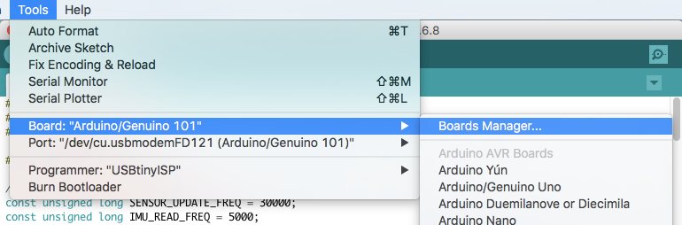
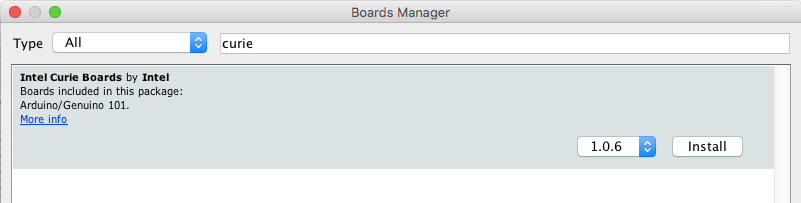
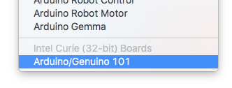
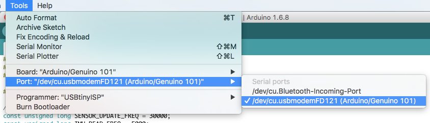
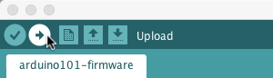
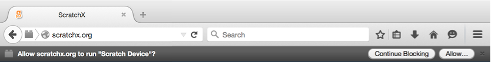
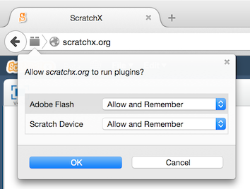
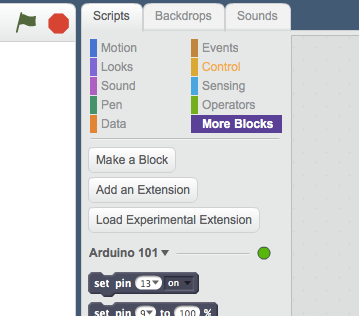

Getting Started
Upload the firmware to the Arduino board
The board will remember the firmware so you will only have to complete this step once.
- If you haven't already, download and install the Arduino IDE (Windows or Mac instructions)
- Connect the Arduino/Genuino 101 board to your computer's USB port
- Launch the Arduino IDE

- Click on the Tools menu and select Board > Boards Manager...
 - Search for "curie" and install the Intel Curie Boards by Intel. Close the Boards Manager once the installation is complete.
 - Download the custom Arduino 101 firmware and open it in the Arduino IDE
- Select Arduino/Genuino 101 under the Tools > Board menu
 - Select the correct serial port under the Tools > Port menu.
On Mac, it's something like /dev/cu.usbmodemXXXXX.
On Windows, it's probably the highest-numbered COM port.
(Or unplug the Arduino, check the menu, and then replug your Arduino and see what new port appears.)
 - Click the upload button

Install the Scratch Extensions Browser Plugin
You will need to use the Firefox web browser for this extension.
Download and install the Scratch Extensions Browser Plugin for "other web browsers"
You will need to quit and relaunch Firefox after installing the plugin
Load the Arduino extension on ScratchX
Launch the extension by going to the following URL:
http://scratchx.org/?url=https://llk.github.io/arduino-101/arduino101_serial_extension.jsNOTE: You might see "Allow scratchx.org to run "Scratch Device?". Click "Allow...".

You might see another message, "Allow scratchx.org to run plugins?". Set both Adobe Flash and Scratch Device to "Allow and Remember" and click OK.

Wait for the green light
When you see the indicator light in the "More Blocks" tab turn green your ready to start using the extension!
Now take a look at the Scratch Blocks and the example projects to learn how to use the extension.